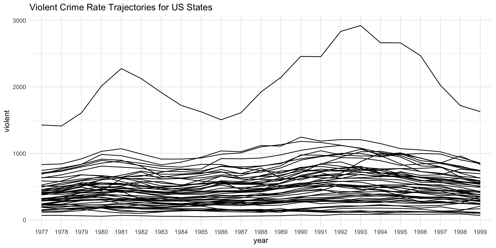
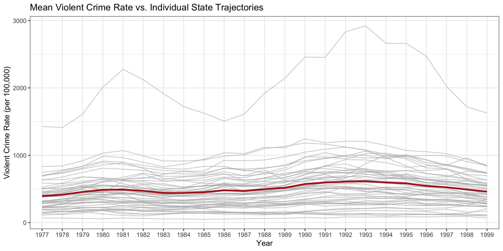
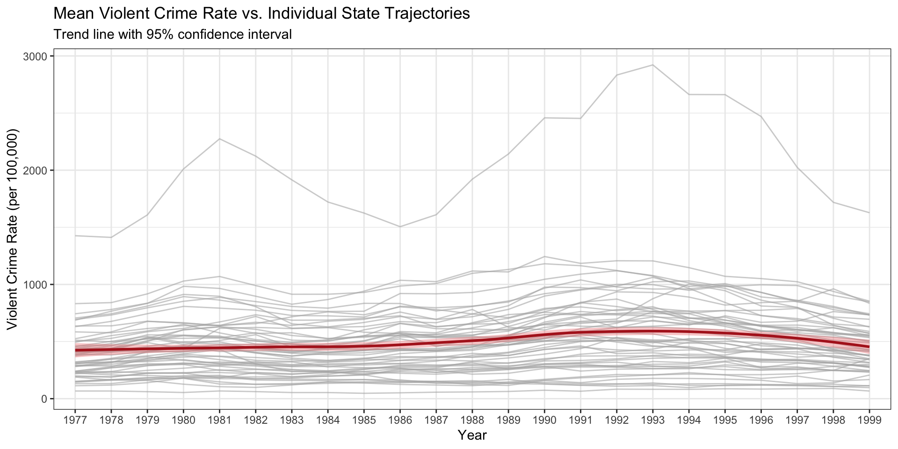
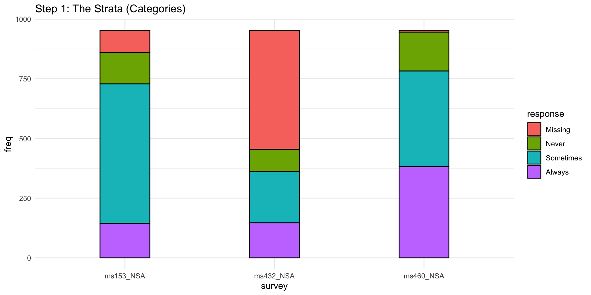
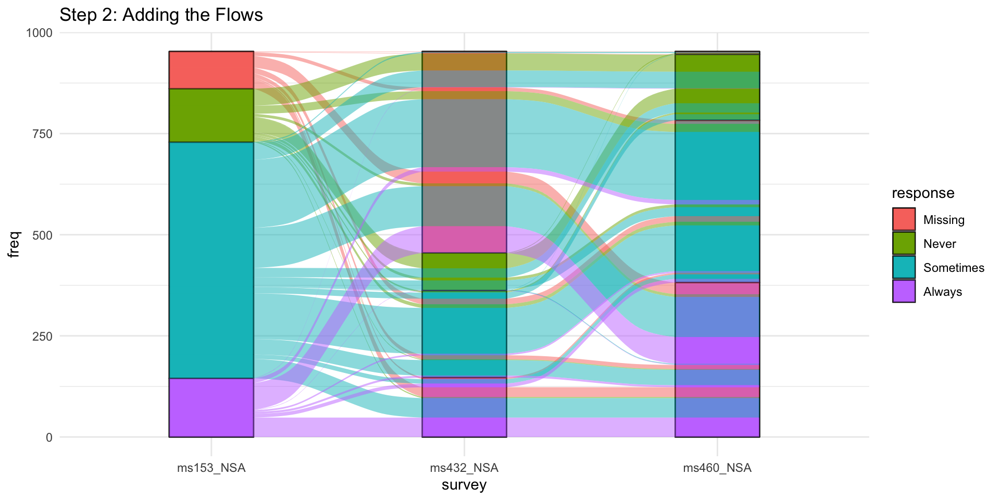
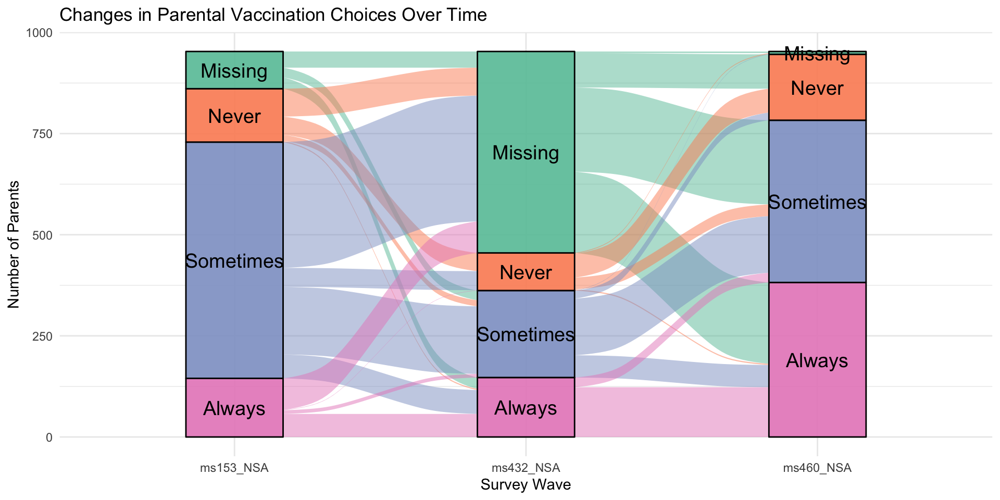
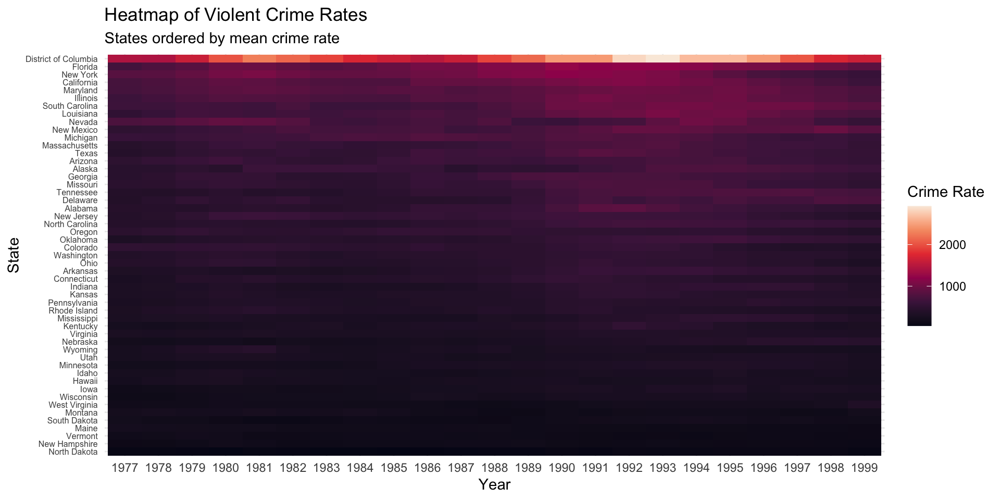
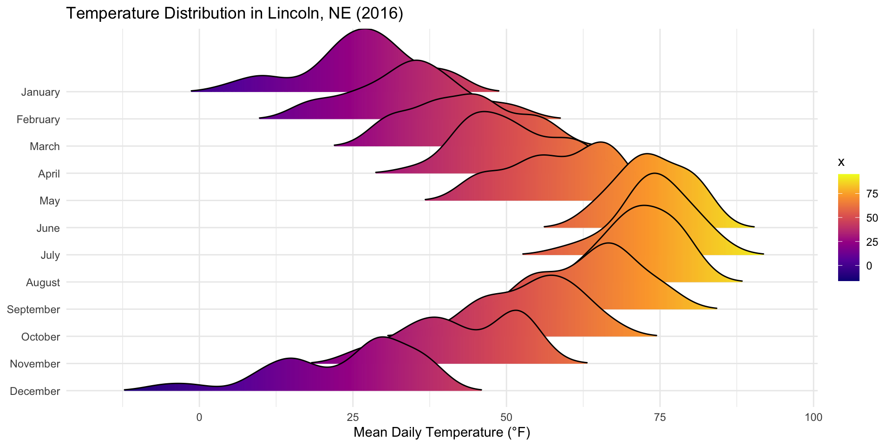
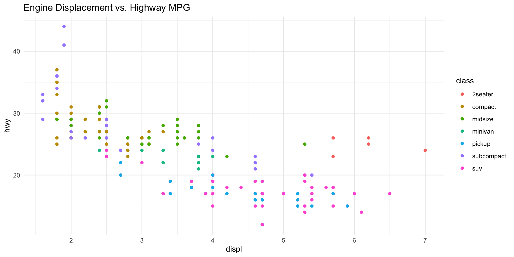

Visualising Longitudinal Data
Attendance Check-In Code
Enter the attendance code for today’s seminar to log your attendance.
You can log your attendance on iSheffield
For today’s lecture, follow along using the shell script on Blackboard entitled Week9_Part1_ClassShell.R.
Longitudinal data involves tracking the same individuals or units (like countries, companies, or patients) and repeating the same measurements at different points in time.
This allows us to study change, growth, and development.
It can be contrasted with cross-sectional data, which is a snapshot at a single point in time.
Visualising this type of data presents unique challenges. We need methods that can clearly show individual change while also summarising overall patterns.
We’ll use tidyverse for ggplot2 and a few new packages for specialised plots. Make sure you have them installed.
The most common way to visualise continuous longitudinal data is with a line plot, where each line represents one individual. For this example we are using Guns data from the AER package. It tracks crime statistics for US states (state) over 23 years (year), from 1977-1999. We’ll focus on the violent crime rate.
year violent murder robbery prisoners afam cauc male population
1 1977 414.4 14.2 96.8 83 8.384873 55.12291 18.17441 3.780403
2 1978 419.1 13.3 99.1 94 8.352101 55.14367 17.99408 3.831838
3 1979 413.3 13.2 109.5 144 8.329575 55.13586 17.83934 3.866248
4 1980 448.5 13.2 132.1 141 8.408386 54.91259 17.73420 3.900368
5 1981 470.5 11.9 126.5 149 8.483435 54.92513 17.67372 3.918531
6 1982 447.7 10.6 112.0 183 8.514000 54.89621 17.51052 3.925229
7 1983 416.0 9.2 98.4 215 8.545608 54.83936 17.35089 3.934103
8 1984 431.2 9.4 96.1 243 8.559511 54.77876 17.11902 3.951826
9 1985 457.5 9.8 105.4 256 8.562801 54.67899 16.85875 3.972520
10 1986 558.0 10.1 111.6 267 8.566521 54.51791 16.57609 3.991562
income density state law
1 9563.148 0.0745524 Alabama no
2 9932.000 0.0755667 Alabama no
3 9877.028 0.0762453 Alabama no
4 9541.428 0.0768288 Alabama no
5 9548.351 0.0771866 Alabama no
6 9478.919 0.0773185 Alabama no
7 9783.000 0.0774933 Alabama no
8 10357.200 0.0778424 Alabama no
9 10725.860 0.0782500 Alabama no
10 11091.620 0.0786251 Alabama noWe start our spaghetti plot by mapping year to x and violent to y. We ask ggplot to draw a separate line for each subject (state) using aes(group = state).

Spaghetti plots can be quite dense, so we might want to highlight overall trends.
The highlighting technique is very effective here. We plot all 50 state trajectories in a faint grey and overlay a bold summary line showing the mean crime rate across all states for each year.
ggplot(data = Guns, mapping = aes(x = year, y = violent)) +
geom_line(aes(group = state), color = "grey70", alpha = 0.6) +
# Add aes(group = 1) to connect the means into a single line
stat_summary(aes(group = 1), fun = mean, geom = "line", color = "firebrick", linewidth = 1.2) +
labs(
title = "Mean Violent Crime Rate vs. Individual State Trajectories",
x = "Year",
y = "Violent Crime Rate (per 100,000)"
) +
theme_bw()This approach elegantly shows both the overall trend (the strong red line) and the significant variation between states (the cloud of grey lines).

We can also use geom_smooth instead to add a smoothed conditional mean, complete with a confidence interval ribbon to show the overall trend and our uncertainty in that trend.
ggplot(data = Guns, mapping = aes(x = year, y = violent)) +
geom_line(aes(group = state), color = "grey70", alpha = 0.6) +
#Add smoothed mean with CI
geom_smooth(aes(group = 1), method = "loess", se = TRUE, color = "#B22222", fill = "#F08080") +
labs(
title = "Mean Violent Crime Rate vs. Individual State Trajectories",
subtitle = "Trend line with 95% confidence interval",
x = "Year",
y = "Violent Crime Rate (per 100,000)"
) +
theme_bw()This approach shows the overall trend and our uncertainty in that trend.

Sometimes we want to track movement between discrete categories. For this, we can use Alluvial Plots.
We’ll use the vaccinations dataset from ggalluvial. It shows how parents’ vaccination choices changed over three surveys. Note the key columns: subject (the unique ID for a pathway), survey (the time point (x axis)), response (the category at that time point (the stratum)), and freq (the number of people following that pathway (the y value)).
survey freq subject response start_date end_date
1 ms153_NSA 48 1 Always 2010-09-22 2010-10-25
2 ms153_NSA 9 2 Always 2010-09-22 2010-10-25
3 ms153_NSA 66 3 Always 2010-09-22 2010-10-25
4 ms153_NSA 1 4 Always 2010-09-22 2010-10-25
5 ms153_NSA 11 5 Always 2010-09-22 2010-10-25
6 ms153_NSA 1 6 Always 2010-09-22 2010-10-25The grammar for ggalluvial has a few key aesthetics:
x: The time pointsstratum: The categories (vertical bars in plot)alluvium: The identifier for each flow (flowing ribbons in plot)y: The magnitude or frequency of the flowLet’s build an alluvial plot step-by-step. We will start with adding the strata: geom_strata draws the vertical bars representing the proportion of each category at each time point.

The next step is adding the alluvia: geom_alluvium() adds the ribbons that flow between the strata, showing how individuals change categories.

The default plot is good, but we can improve it. geom_flow() is a convenient shortcut for geom_stratum + geom_alluvium. We can also add labels directly onto the strata using geom_text(stat = "stratum") which tells ggplot to calculate the position for the labels based on the stratum locations.
ggplot(data = vaccinations,
aes(x = survey, stratum = response, alluvium = subject,
y = freq, fill = response, label = response)) +
scale_fill_brewer(type = "qual", palette = "Set2") +
geom_flow() +
geom_stratum(alpha = .9) +
geom_text(stat = "stratum", size = 5, color = "black") + # Add labels
theme(legend.position = "none") +
labs(title = "Changes in Parental Vaccination Choices Over Time",
x = "Survey Wave", y = "Number of Parents")
A heatmap is great for seeing the big picture. We use geom_tile() to map time (x), subject (y), and the measured value (fill).
A pro tip for heatmaps is to order the rows (y-axis) meaningfully. Instead of alphabetical, let’s order the states by their mean violent crime rate. This groups similar states together, making patterns easier to see. We can do this with fct_reorder().
guns_heatmap <- Guns %>%
mutate(state = fct_reorder(state, violent, .fun = 'mean')) %>% # Reorder states
ggplot(mapping = aes(x = year, y = state, fill = violent)) +
geom_tile() +
scale_fill_viridis_c(option = "rocket") +
labs(title = "Heatmap of Violent Crime Rates",
subtitle = "States ordered by mean crime rate",
x = "Year", y = "State", fill = "Crime Rate") +
theme(axis.text.y = element_text(size = 6))
guns_heatmap 
What if you want to see how the entire distribution of a variable changes? Ridge plots are perfect for this. They are essentially overlapping density plots.
We’ll use the ggridges package and its lincoln_weather dataset to see the distribution of daily mean temperature for each month.
# A tibble: 6 × 24
CST `Max Temperature [F]` `Mean Temperature [F]` `Min Temperature [F]`
<chr> <int> <int> <int>
1 2016-1-1 37 24 11
2 2016-1-2 41 23 5
3 2016-1-3 37 23 8
4 2016-1-4 30 17 4
5 2016-1-5 38 29 19
6 2016-1-6 34 33 32
# ℹ 20 more variables: `Max Dew Point [F]` <int>, `Mean Dew Point [F]` <int>,
# `Min Dewpoint [F]` <int>, `Max Humidity` <int>, `Mean Humidity` <int>,
# `Min Humidity` <int>, `Max Sea Level Pressure [In]` <dbl>,
# `Mean Sea Level Pressure [In]` <dbl>, `Min Sea Level Pressure [In]` <dbl>,
# `Max Visibility [Miles]` <int>, `Mean Visibility [Miles]` <int>,
# `Min Visibility [Miles]` <int>, `Max Wind Speed [MPH]` <int>,
# `Mean Wind Speed[MPH]` <int>, `Max Gust Speed [MPH]` <int>, …The main function is geom_density_ridges().
x is the continuous variable whose distribution we want to seey is the categorical variable that defines the groups or time pointsfill = after_stat(x) is a neat trick that colours density plot by the x-value, creating a gradient effectggplot(lincoln_weather, aes(x = `Mean Temperature [F]`, y = Month, fill = after_stat(x))) +
geom_density_ridges_gradient(scale = 3, rel_min_height = 0.01) +
scale_fill_viridis_c(option = "C") +
labs(title = "Temperature Distribution in Lincoln, NE (2016)",
x = "Mean Daily Temperature (°F)", y = NULL)This plot shows both the shift in average temperature and the change in variability through the year.

Static plots are great for publications, but interactive plots allow your audience to explore the data more deeply. You can hover, zoom, pan, and toggle.
The plotly package provides the magic ggplotly() function, which converts your static ggplot objects into dynamic HTML widgets.
ggplotly() WorkflowThe workflow is quite simple:
ggplot object as usual, but save it to a variable (e.g., myplot <- ggplot(...))ggplotly() function (e.g., ggplotly(my_plot))ggplotly() ScatterplotLet’s make a scatterplot to start.

ggplotly() ScatterplotAnd now let’s make it interactive.
The default tooltip is good, but we can make it better by adding custom information. The best way to do this is to add a text aesthetic inside your original aes() call. ggplotly() will automatically use this information for the hover text.
Let’s apply this to our spaghetti plot. We’ll add the state name to the tooltip.
# Add a `text` aesthetic to geom_line to create custom hover info
p_spaghetti <- ggplot(data = Guns, mapping = aes(x = year, y = violent)) +
geom_line(aes(group = state, text = paste("State:", state)), color = "grey70", alpha = 0.5) +
geom_smooth(method = "loess", se = TRUE, color = "#B22222", fill = "#F08080") +
labs(title = "Hover over a line to see the state!", x = "Year", y = "Violent Crime Rate")This technique works on almost any ggplot, including our complex heatmap. This is incredibly useful, as it allows a user to quickly see the exact crime rate for any state in any year without needing to guess from the colour scale.
We’ve explored a powerful toolkit for visualising complex longitudinal data.
plotly::ggplotly() to turn any ggplot into an explorable web graphic.Give it a try
Work through this week’s worksheet, which can be found on Blackboard.
Anything you don’t finish, should be completed for homework.
Burr PSY6422